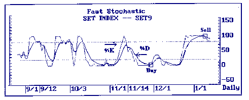
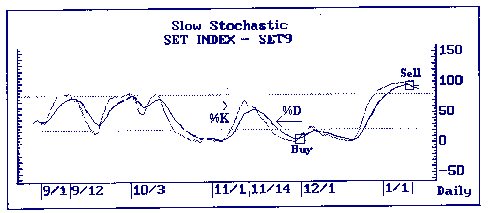
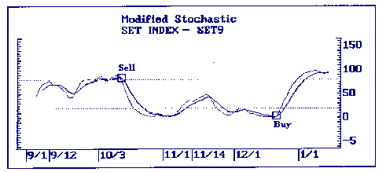
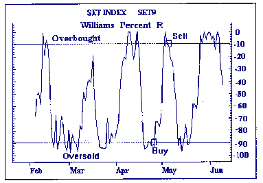

| << | 9 | >> |
สโตแคสติกส์แบบเร็ว FAST STOCHASTIC
STOCHASTIC แบบเร็วนี้ เป็นเครื่องมือวัดการแกว่งตัวของระดับราคาในปัจจุบัน
ภายในช่วงกว้างของระดับราคา ณ ช่วงเวลาหนึ่ง ๆ ซึ่งมีการแกว่งตัวที่รวดเร็วมาก
จึงทำให้หลายฝ่ายไม่นิยมใช้ เนื่องจากมีการแกว่งตัวที่ผันผวนและไม่แน่นอน
ดังนั้น SLOW STOCHASTIC จึงเป็นที่นิยมใช้มากกว่า
STOCHASTIC นี้ประกอบด้วยค่าดัชนีสองค่าคือ %K และ %D โดยจะบอกถึงภาวะซื้อมากไป
(OVERBOUGHT) เมื่อ STOCHASTIC ตัดเส้น 80% ขึ้นไป คืออยู่ในช่วงระหว่างเส้น 80%
ถึง 100 % และจะบอกภาวะขายมากไป (OVERSOLD) เมื่อ STOCHASTIC เตือนชี้จะเกิดขึ้นเมื่อเส้น
%D ตัดเส้น 20% ลงมา และสัญญาณซื้อจะเกิดขึ้นเมื่อเส้น %Kตัดเส้น %D ขึ้นไป สำหรับสัญญาณเตือนขายจะเกิดขึ้นเมื่อเส้น
%D ตัดเส้น 80% ขึ้นไป และสัญญาณขายจะเกิดขึ้นเมื่อเส้น %K ตัดเส้น %D ลงมา
FORMULA
FAST %k = CURRENT CLOSE LOWEST LOWn /
HIGHEST HIGHn LOWEST LOWn
%D = 3 PERIOD MODIFIED MOVING AVERAGE OF FAST %k
n = NUMBER OF PERIODS
 |
 |
 |
วิลเลี่ยมเปอร์เซ็นต์อาร์ WILLIAM %R
%R เป็นเครื่องมือแสดงภาวะซื้อมากไป หรือภาวะขายมากไป ซึ่งพิจารณาจากราคาปัจจุบันว่าอยู่
ณ ระดับราคาใดในช่วงเวลาหนึ่ง ๆ ที่กำหนด %Rของช่วงเวลาหนึ่ง ๆ ถูกคำนวณได้ โดยหักลบราคาปัจจุบันจากราคาสูงสุดของช่วงเวลานั้น
แล้วหารผลที่ได้นี้ด้วยช่วงกว้างของระดับราคาของช่วงเวลานั้น ๆ ซึ่งคำนวณได้จากสูตรดังต่อไปนี้
%R = HIGHn CURRENT LAST / LOWn HIGHn
เมื่อ n = จำนวนเวลา
HIGHn = ราคาต่ำสุดในช่วงเวลาที่กำหนด
LOWn = ราคาต่ำสุดในช่วงเวลาที่กำหนด
%R จะแตกต่างจากเครื่องมือตัวอื่น ๆ ในด้านมาตรวัด ซึ่งใช้วัดระดับ
ภาวะซื้อมากไปหรือขายมากไปโดยมีระดับอยู่ในช่วงระหว่าง 0 ถึง 100 กล่าวคือระดับ
0 จะอยู่ข้างบน ส่วน 100 จะอยู่ด้านล่าง เหตุที่วาง SCALE ในลักษณะนี้เพื่อเหตุผลในการคำนวณ
ดังนั้นจึงไม่ต้องให้ความสำคัญกับเครื่องหมายลบ
หลักการวิเคราะห์ของ WILLIAMS
สัญญาณซื้อจะเกิดเมื่อ %R ได้ตัดเส้นระดับ -90% ขึ้นไป
สัญญาณขายจะเกิดขึ้นเมื่อเส้น %R ตัดเส้นระดับ 10%
ระดับภาวะซื้อมากไป (OVERBOUGHT ) อยู่ในช่วงระหว่าง 0 ถึง 10
ระดับภาวะขายมากไป (OVERSOLD) อยู่ในช่วงระดับ 90 ถึง 100
 |
| << | 9 | >> |